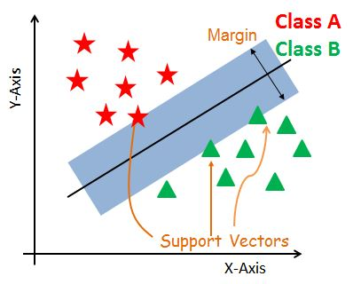
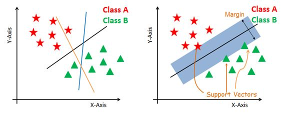
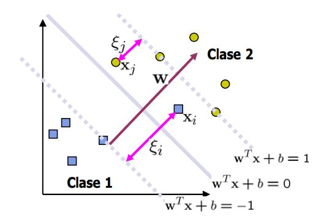
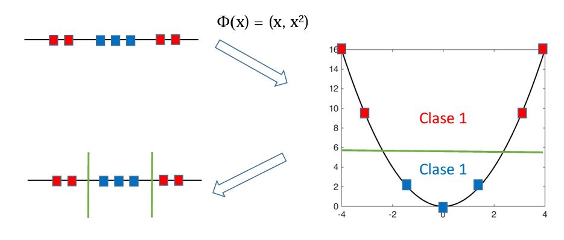
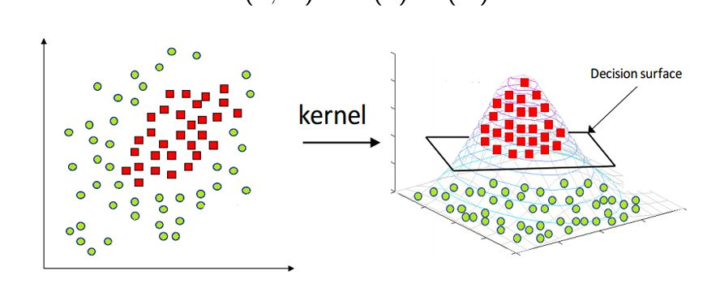

Support Vector Machines¶
Support Vector Machines (SVM) es un método para clasificación y regresión de datos lineales y no lineales. Se pueden usar variables continuas y categóricas y es útil para detectar valores atípicos.
El método de SVM es altamente efectivo en espacios de grandes dimensiones y adecuado para conjuntos de datos complejos de tamaño pequeño y mediano. Adicionalmente, es sensibles a las escalas de las variables, por lo que se recomienda estandarizar o normalizar los datos antes de entrenar el modelo.
A diferencia de los clasificadores de regresión logística, los clasificadores SVM no generan probabilidades para cada clase.
Este método busca un límite de decisión con el que se maximice el margen entre dos clases. Este margen es llamado hiperplano y separa las dos clases.
La siguiente figura muestra el hiperplano óptimo que minimiza el error al clasificar los datos en clases.

Hiperplano-svm¶
Los vectores de soporte son los puntos de datos que están más cerca del hiperplano. Estos puntos definirán mejor la línea de separación al calcular los márgenes. Estos puntos son más relevantes para la construcción del clasificador.
Si el margen es mayor entre las clases, entonces se considera un buen margen, un margen más pequeño es un mal margen.
El objetivo principal es segregar el conjunto de datos dado de la mejor manera posible. La distancia entre los puntos más cercanos se conoce como margen. El objetivo es seleccionar un hiperplano con el máximo margen posible entre los vectores de soporte en el conjunto de datos dado con el menor error posible.
En otras palabras, el objetivo es encontrar un buen equilibrio entre mantener la calle lo más grande posible y limitar las violaciones de los márgenes (es decir, instancias que terminan en el medio de la calle o incluso en el lado equivocado).
La búsqueda del hiperplano óptimo es iterativo (Ver siguiente figura).

Hiperplano-iterativo¶
El ejemplo anterior utiliza un hiperplano lineal; sin embargo, algunos problemas no se resuelven de forma lineal. Para estos casos SVM utiliza una técnica llamada kernel trick para problemas de clasificación no lineal.

SVM¶
kernel trick:¶
El kernel trick transforma los datos en un espacio de mayor dimensión por medio de una transformación no lineal. Se utiliza en datos separables no lineales.
kernel trick separa los datos como si se hubieran agregado muchas características, como un polinomio de grado alto sin tener que agregarlo al resultado.
Por ejemplo, los siguientes datos en 1D se transforman en 2D para hallar el hiperplano óptimo:

Kernel-1¶
Lo siguientes datos en 2D (dos variables) se transforman en 3D:

Kernel-2¶
SVM en Python:¶
Se usará scikit-learn en Python para implementar SVM. La librería
tiene unos hiperparámetros por defecto.
Los Kernels de la librería scikit-learn son:
"linear", "poly", "rbf", "sigmoid", "precomputed".
Lineal:
Polinomial:
RBF - Radial Basis Function o Gaussiano:
Sigmoide:
Por defecto el Kernel de scikit-learn es rbf, para usar otros
Kernels se debe especificar y dependiendo del Kernel se debe
proporcional hiperparámetros adicionales.
Parámetro |
Código |
Default |
Kernel |
|---|---|---|---|
\(d\) |
|
3 |
|
Gamma \(\gamma\) |
|
:m ath:bigstar |
|
\(r\) |
|
0.0 |
|
\(\bigstar\) \(\frac{1}{CantidadVariables*X.var()}\)
\(\gamma\) es un parámetro que varía de 0 a 1. Valores altos de \(\gamma\) se ejecutará perfectamente al conjunto de datos y el modelo se sobreajustará.
Un valor de gamma pequeño hace que la curva en forma de campana sea más
estrecha, el límite de decisión termina siendo más suave. Si el modelo
se sobreajusta, este parámetro se debe reducir; si es insuficiente, debe
aumentarlo (similar al hiperparámetro C que explicaremos más
adelante).
\(r\) es llamado coef0 término independiente del Kernel.
Optimización de hiperparámetros:¶
Tuning Hyperparameters
Para encontrar la mejor configuración de un modelo de SVM se pueden variar los siguiente hiperparámetros:
Kernel.
Parámetro C.
Gamma.
Como se explicó anteriormente, el Kernel se puede variar entre
"linear", "poly", "rbf", "sigmoid", "precomputed". El el Kernel
Polinomial se puede cambiar el parámetro degree = para encontrar la
mejor configuración.
Parámetro C:
El parámetro C = es una penalización. Este parámetro de
regularización controla el equilibrio entre el margen (ancho de la
calle) y el error de clasificación. Un valor menor de C crea un
hiperplano de margen pequeño y un valor mayor de C crea un hiperplano de
mayor margen.
El ajuste de este parámetro se puede hacer en un balance entre la maximización del margen y la violación a la clasificación.
Si su modelo SVM está sobreajustado, puede intentar regularizarlo reduciendo C.
Por defecto en scikit-learn el valor es C = 1.0.
Gamma:
gamma = puede cambiar la forma de la campana. Un valor bajo ajustará
libremente el conjunto de datos, mientras que un valor más alto ajustará
exactamente al conjunto de datos, lo que provocaría un ajuste excesivo
(sobreajuste).
Código:¶
En Python se debe importar el módulo SVM:
from sklearn.svm import SVC
Luego se crea un objeto clasificador indicando el Kernel en la función
SVC(), el cual lo llamaremos clf así:
clf = SVC(kernel = "linear")
El ajuste del modelo se hace con la función .fit() así:
clf.fit(X,y)
Por último, se realiza la predicción con el modelo ajustado usando la
función .predict(), los valores predichos los llamaremos y_pred:
y_pred = clf.predict(X)
Evaluación del desempeño:¶
En los métodos de clasificación se usan muchas métricas para evaluar el desempeño (performance) del modelo, pero por ahora nos enfocaremos en la precisión.
Importaremos el módulo accuracy_score así:
from sklearn.metrics import accuracy_score
El accuracy es una comparación entre los valores reales y los predichos. Se realiza de la siguiente manera:
accuracy_score(y, y_pred)
Resumen del código:
from sklearn.svm import SVC
from sklearn.metrics import accuracy_score
clf = SVC(kernel = "linear")
clf.fit(X,y)
y_pred = clf.predict(X)
accuracy_score(y, y_pred)
Ventajas:¶
Los clasificadores SVM ofrecen una buena precisión y realizan una predicción más rápida que otros algoritmos. También usan menos memoria porque usan un subconjunto de puntos de entrenamiento en la fase de decisión. SVM funciona bien con un claro margen de separación y con un alto espacio dimensional.
Desventajas:¶
SVM no es adecuado para grandes conjuntos de datos debido a su alto tiempo de entrenamiento y también requiere más tiempo de entrenamiento. Funciona mal con clases superpuestas (overlapping classes) y también es sensible al tipo de Kernel utilizado.